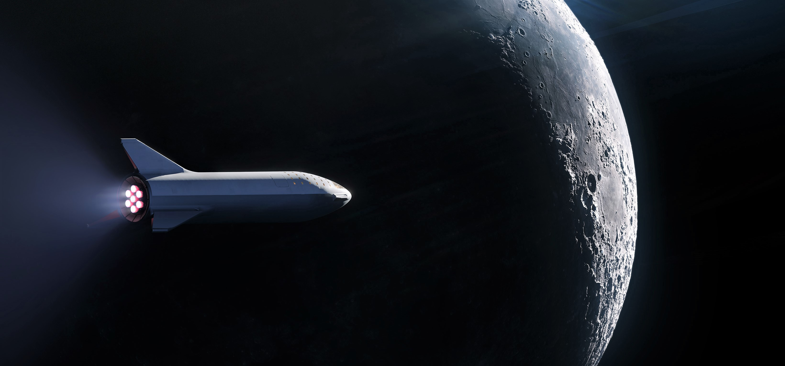

June 28, 1971 :
Born in South Africa
"The man behind SpaceX, Tesla, SolarCity, Open AI, and TheBoring Company"

"Some people don't like change, but you need to embrace change if the alternative is a disaster."
Elon Musk's life Timeline
Born in South Africa
Creates and writes a video game called Blastar; sells it for the equivalent of $500
eBay acquires PayPal for $1.5 billion in stock, of which $165 million goes to Musk
Founds SpaceX
Becomes Tesla’s CEO
SpaceX becomes the first commercial vehicle to deliver a load of supplies to the International Space Station.
Tesla begins deliveries of the all-electric Model S
Announced Open-Sourcing Tesla Technology
Committed to building a SolarCity advanced production facility in Buffalo
Announced creation of OpenAI, an Artificial Intelligence company
Revealed Mars colonization exploration architecture details
Hyperloop One announced first successful test run
Purchased x.com domain from PayPal
Left the OpenAI board
Filed an 'intent to use' trademark application for Teslaquila
Elon Musk has topped Microsoft founder Bill Gates to become the world's second richest person.

2020-2021 : Try to launch a full BFR, and get a spaceship into orbit.
2022 : Launch two missions to Mars full of cargo and supplies (but no people).

2022-2023 : Land the first Big Falcon Spaceship on Mars.
2023 : Launch the first people with BFR and send them around the moon.
2024 : Blast people on the first human voyage to Mars.
2025 : Put boots on Mars.
2028 : Finish building Mars Base Alpha.
Perhaps the 2030s : Construction of the first city on Mars.
2100s onward : Terraform Mars into an Earth-like planet.
For more details visit his wikipedia page